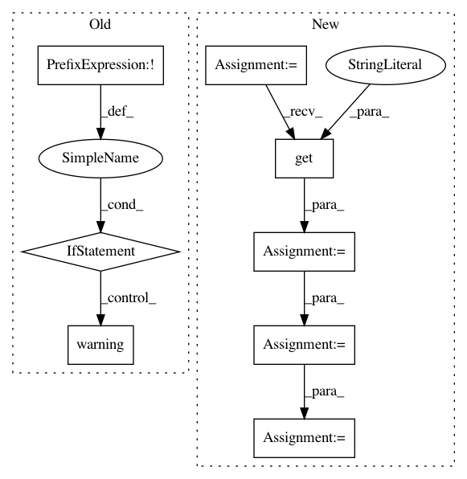

ebd339fe6f290551bf9424a06ee8c44c43b6d69c,src/pudl/extract/ferc714.py,,get_ferc714,#Any#,47
Before Change
ferc714_dir = pathlib.Path(pudl_settings["data_dir"]) / "local/ferc714/"
ferc714_dir.mkdir(parents=True, exist_ok=True)
ferc714_zipfile = ferc714_dir / "ferc714.zip"
if not ferc714_zipfile.is_file():
logger.warning("Downloading a fresh copy of the FERC 714 data (~50MB).")
pudl.helpers.download_zip_url(ferc714_url, ferc714_zipfile)
return ferc714_zipfile
def _get_zpath(ferc714_table, pudl_settings):
After Change
def get_ferc714(pudl_settings):
If necessary, download a fresh copy of the FERC 714 data.
sandbox = pudl_settings.get("sandbox", False)
ds = pudl.workspace.datastore.Datastore(
Path(pudl_settings["pudl_in"]),
sandbox=sandbox)
resources = ds.get_resources("ferc714")
for r in resources:
if r["name"] == "form714.zip":
return Path(r["path"])
def _get_zpath(ferc714_table, pudl_settings):
Given a table name and pudl_settings, return a Path to the corresponding file.
In pattern: SUPERPATTERN
Frequency: 3
Non-data size: 8
Instances
Project Name: catalyst-cooperative/pudl
Commit Name: ebd339fe6f290551bf9424a06ee8c44c43b6d69c
Time: 2020-08-21
Author: mailbox@pablovirgo.com
File Name: src/pudl/extract/ferc714.py
Class Name:
Method Name: get_ferc714
Project Name: deepchem/deepchem
Commit Name: 38e2076694fd069be6be5d0be428b28e7eddc99e
Time: 2019-07-30
Author: vsomnath@student.ethz.ch
File Name: deepchem/molnet/load_function/hppb_datasets.py
Class Name:
Method Name: load_hppb
Project Name: deepchem/deepchem
Commit Name: 38e2076694fd069be6be5d0be428b28e7eddc99e
Time: 2019-07-30
Author: vsomnath@student.ethz.ch
File Name: deepchem/molnet/load_function/thermosol_datasets.py
Class Name:
Method Name: load_thermosol